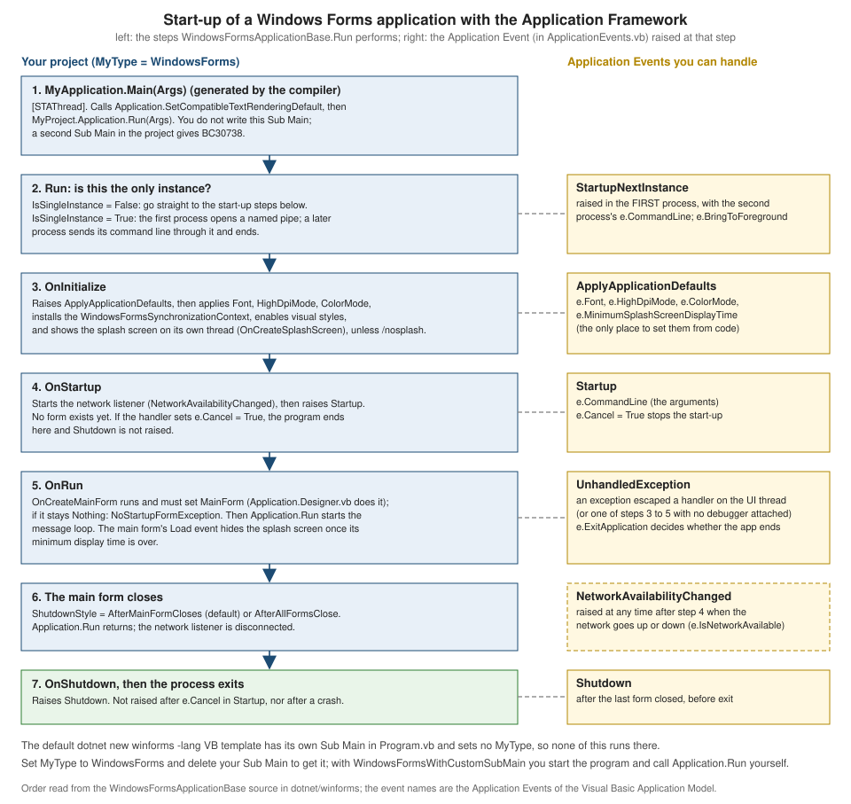

Windows Forms Applications
|
This content was generated with the assistance of AI and should be verified against the official documentation before being relied on in production. |
This page is written against Visual Basic 17.13 on .NET 10 (SDK 10.0.402) and was checked on 2026-10-19. Windows Forms runs only on Windows, and the machine used
for this page is a Linux container, so the Windows Forms examples were built, not run: each was compiled on the .NET 10 SDK with
EnableWindowsTargeting set to true (the SDK then compiles against the Windows desktop reference assemblies on any operating system), with
Option Strict On and warnings treated as errors, and none of them was started. That proves that the code compiles and that the compiler messages
shown are the real ones; it does not prove how a window looks or behaves, and the descriptions of run-time behaviour come from the Microsoft documentation and from reading the
open-source Windows Forms runtime, as cited. Two examples that do not need a window were run for real: the BindingList(Of T) model behind data binding, and
the resource lookup behind localization. They are labelled "run". The root namespace of the projects is ShelfDesktop.
Windows Forms is the oldest of the Windows desktop UI frameworks and the one most Visual Basic programmers know first. Mastering VB.NET
(Hussain and Hussain) builds its chapters 4 and 11 on it, with the designer, Handles, Anchor and Dock, components such as Timer, ErrorProvider and BindingSource, custom
controls and localization; Visual Basic Quickstart Guide (Olmsted) uses a Windows Forms handler for its first event example. Most of that survives on .NET 10 unchanged. What changed is
the project format, the start-up code, the designer, a handful of new capabilities and a few removals, and the Visual Basic-specific Application Framework,
which is the part with the most surprises and gets most of this page. The same ideas for the other Windows UI technology are on
WPF Applications; the C# view of events is on
Delegates, Lambdas and Events (C#).
Windows Forms on .NET and on .NET Framework
Windows Forms (WinForms) is a wrapper over the Win32 windowing system: every control is a window handle, and the framework turns Windows messages into .NET events. The code
for it was ported to .NET Core 3.0 and is now an open-source part of .NET (the dotnet/winforms repository). It is Windows-only: the project targets a
-windows framework moniker and builds against the Windows Desktop targeting pack. The differences from the .NET Framework version, which still ships with Windows and is in maintenance:
| Topic | .NET Framework 4.8.1 | .NET 10 |
|---|---|---|
Target |
|
|
Project file |
old-style |
always SDK-style, no |
Start-up |
Application Framework by default: |
the SDK template writes its own |
Designer |
in-process designer in Visual Studio |
out-of-process designer (Visual Studio 2022 and 2026); controls and component editors that were not yet ported appear over time (some were ported in .NET 10) |
Default font |
Microsoft Sans Serif 8.25pt |
Segoe UI 9pt (since .NET Core 3.1), settable for the whole application from .NET 6 |
High DPI |
opt-in through |
|
Serialization |
the binary object serializer of the .NET Framework is available |
removed in .NET 9 (it throws |
Dialogs |
|
also |
Threading |
|
also |
Distribution |
installed with the OS; ClickOnce, MSI |
framework-dependent (needs the Desktop Runtime) or self-contained; MSIX, ClickOnce, MSI (see the deployment page) |
Third-party controls and Visual Studio add-ins of the .NET Framework era may have no .NET 10 version, so check each component before a migration; the official upgrade guide is in the references. The features that arrived in each release, with the sources checked on 2026-10-19:
| Release | What matters to a VB Windows Forms programmer |
|---|---|
.NET Core 3.0 |
Windows Forms and WPF on .NET; Visual Basic was not supported on .NET Core until .NET 5 |
.NET 5 |
Visual Basic support for Windows Forms, WPF and class libraries; |
.NET 6 |
|
.NET 7 |
command binding and a new data-binding engine in preview ( |
.NET 8 |
the data-binding engine and |
.NET 9 |
|
.NET 10 |
async dialogs and dark mode no longer experimental ( |
.NET 11 (upcoming) |
not generally available at the time of writing (11.0.100 RC 2 was the newest SDK checked); its what’s-new page is a release-candidate document, so verify it after the release |
Source: What’s new in Windows Forms
Creating a project: dotnet new winforms
On a Windows machine, dotnet new winforms -lang VB -o ShelfDesktop creates the project. On this Linux container the template files were created but the restore that follows failed with the message that tells you
how to compile the project anyway:
$ dotnet new winforms -lang VB -o ShelfDesktop
The template "Windows Forms App" was created successfully.
Processing post-creation actions...
Restoring ShelfDesktop.vbproj:
Determining projects to restore...
/usr/share/dotnet/sdk/10.0.402/Sdks/Microsoft.NET.Sdk/targets/Microsoft.NET.Sdk.FrameworkReferenceResolution.targets(120,5): error NETSDK1100: To build a project targeting Windows on this operating system, set the EnableWindowsTargeting property to true.
Restore failed.
Post action failed.
Manual instructions: Run 'dotnet restore'
$ dotnet build
/usr/share/dotnet/sdk/10.0.402/Sdks/Microsoft.NET.Sdk/targets/Microsoft.NET.Sdk.FrameworkReferenceResolution.targets(120,5): error NETSDK1100: To build a project targeting Windows on this operating system, set the EnableWindowsTargeting property to true.
/usr/share/dotnet/sdk/10.0.402/Sdks/Microsoft.NET.Sdk/targets/Microsoft.NET.Sdk.FrameworkReferenceResolution.targets(120,5): error NETSDK1100: To build a project targeting Windows on this operating system, set the EnableWindowsTargeting property to true.
0 Warning(s)
$ dotnet build -p:EnableWindowsTargeting=true
0 Warning(s)
0 Error(s)Source: dotnet new
The generated project (on Windows there is no NETSDK1100; the third command above is the same build with Windows targeting on) has these files, shown exactly as the template wrote them:
<Project Sdk="Microsoft.NET.Sdk">
<PropertyGroup>
<OutputType>WinExe</OutputType>
<TargetFramework>net10.0-windows</TargetFramework>
<RootNamespace>ShelfDesktop</RootNamespace>
<StartupObject>Sub Main</StartupObject>
<UseWindowsForms>true</UseWindowsForms>
</PropertyGroup>
<ItemGroup>
<Import Include="System.Data" />
<Import Include="System.Drawing" />
<Import Include="System.Windows.Forms" />
</ItemGroup>
</Project>Friend Module Program
<STAThread()>
Friend Sub Main(args As String())
Application.SetHighDpiMode(HighDpiMode.SystemAware)
Application.EnableVisualStyles()
Application.SetCompatibleTextRenderingDefault(False)
Application.Run(New Form1)
End Sub
End ModulePublic Class Form1
End Class<Global.Microsoft.VisualBasic.CompilerServices.DesignerGenerated()>
Partial Class Form1
Inherits System.Windows.Forms.Form
'Form overrides dispose to clean up the component list.
<System.Diagnostics.DebuggerNonUserCode()>
Protected Overrides Sub Dispose(disposing As Boolean)
Try
If disposing AndAlso components IsNot Nothing Then
components.Dispose()
End If
Finally
MyBase.Dispose(disposing)
End Try
End Sub
'Required by the Windows Form Designer
Private components As System.ComponentModel.IContainer
'NOTE: The following procedure is required by the Windows Form Designer
'It can be modified using the Windows Form Designer.
'Do not modify it using the code editor.
<System.Diagnostics.DebuggerStepThrough()>
Private Sub InitializeComponent()
components = New System.ComponentModel.Container()
AutoScaleMode = AutoScaleMode.Font
ClientSize = New Size(800, 450)
Text = "Form1"
End Sub
End ClassReading the template, in the order of surprise:
-
Program.vbhas its ownSub Main.Friend Module Programwith<STAThread()>,Application.SetHighDpiMode(HighDpiMode.SystemAware),Application.EnableVisualStyles(),Application.SetCompatibleTextRenderingDefault(False)andApplication.Run(New Form1). This is the C# model (Program.cs), not the Visual Basic Application Framework that .NET Framework projects use. -
<StartupObject>Sub Main</StartupObject>keeps the project on thatSub Main. There is noMyTypeproperty, soMyTypeisEmptyandMy.Forms,My.Applicationand the default instances do not exist;Form1.Show()does not compile (BC30469, shown below). -
Form1.vbis the code-behind, empty, andForm1.Designer.vbis the designer-generated half of the samePartial Class(see the next sections).Form1.Designer.vbisPartial Class Form1withInherits System.Windows.Forms.Form(the sections after the next one explain it). -
<Import Include="System.Windows.Forms" />(andSystem.Drawing,System.Data) are project-wide imports: that is whyApplication,FormandButtonneed noImportsin any file. -
ShelfDesktop.vbproj.user(not shown) marksForm1.vbas<SubType>Form</SubType>for the designer. -
The template turns neither
OptionStrictnorTreatWarningsAsErrorson; the examples on this page have<OptionStrict>On</OptionStrict>in the project.
Only the SDK template was checked for this page. Visual Studio’s own Windows Forms App template may differ: the Microsoft blog post cited below describes a Visual Basic project that has the Application Framework switched on and an ApplicationEvents.vb from the start, with the framework as a section of the project properties. To find out which kind of project you have, look for MyType in the project file and for a Sub Main.
Three ways to start a Windows Forms program
The start-up mechanism is chosen by one project property, MyType, plus which Sub Main exists. This is the most important decision in a VB Windows Forms project and
it is where most confusion comes from, because the older books and answers assume the Application Framework is always on.
| Mode | Project | Who starts the application | What you get |
|---|---|---|---|
Own |
|
your |
no |
Application Framework |
|
the compiler-generated |
|
Custom |
|
your |
|
The compiler messages show how the modes exclude each other. With MyType=WindowsForms the compiler adds a Main of its own, so a project that also has the template’s Sub Main has two:
vbc : error BC30738: 'Sub Main' is declared more than once in 'ShelfDesktop': ShelfDesktop.My.MyApplication.Main(Args As String()), ShelfDesktop.Startup.Main()while MyType=WindowsFormsWithCustomSubMain with the same code builds without error. Switching a template-generated project to the Application Framework therefore means: set MyType to WindowsForms, delete (or empty) the Sub Main, remove StartupObject, and
tell the framework which form to start by overriding OnCreateMainForm.
(Visual Studio’s project page does this for you by writing Application.myapp and a generated Application.Designer.vb.)
The designer, Form.vb and Form.Designer.vb
A Windows Forms form is a class split across two files that share one Partial Class:
| File | Contents |
|---|---|
|
your code: event handlers, properties, validation. Visual Studio never rewrites it |
|
generated by the form designer: the |
|
resources that belong to the form: images, and strings and sizes when the form is |
The designer writes controls as Friend WithEvents fields and the code in InitializeComponent between SuspendLayout and ResumeLayout. A complete designer file for the Add a book dialog of the shelf application, written in the
style that Visual Studio produces (a TableLayoutPanel for the fields, a FlowLayoutPanel for the buttons, an ErrorProvider and a ToolTip as components), is:
Option Strict On
<Global.Microsoft.VisualBasic.CompilerServices.DesignerGenerated()>
Partial Class AddBookForm
Inherits System.Windows.Forms.Form
'Form overrides dispose to clean up the component list.
<System.Diagnostics.DebuggerNonUserCode()>
Protected Overrides Sub Dispose(disposing As Boolean)
Try
If disposing AndAlso components IsNot Nothing Then
components.Dispose()
End If
Finally
MyBase.Dispose(disposing)
End Try
End Sub
Private components As System.ComponentModel.IContainer
<System.Diagnostics.DebuggerStepThrough()>
Private Sub InitializeComponent()
components = New System.ComponentModel.Container()
LayoutPanel = New System.Windows.Forms.TableLayoutPanel()
TitleLabel = New System.Windows.Forms.Label()
TitleTextBox = New System.Windows.Forms.TextBox()
IsbnLabel = New System.Windows.Forms.Label()
IsbnTextBox = New System.Windows.Forms.TextBox()
YearLabel = New System.Windows.Forms.Label()
YearUpDown = New System.Windows.Forms.NumericUpDown()
Buttons = New System.Windows.Forms.FlowLayoutPanel()
OkButton = New System.Windows.Forms.Button()
DismissButton = New System.Windows.Forms.Button()
Problems = New System.Windows.Forms.ErrorProvider(components)
Tips = New System.Windows.Forms.ToolTip(components)
LayoutPanel.SuspendLayout()
CType(YearUpDown, System.ComponentModel.ISupportInitialize).BeginInit()
Buttons.SuspendLayout()
CType(Problems, System.ComponentModel.ISupportInitialize).BeginInit()
SuspendLayout()
'
'LayoutPanel
'
LayoutPanel.ColumnCount = 2
LayoutPanel.ColumnStyles.Add(New System.Windows.Forms.ColumnStyle())
LayoutPanel.ColumnStyles.Add(New System.Windows.Forms.ColumnStyle(System.Windows.Forms.SizeType.Percent, 100.0F))
LayoutPanel.Controls.Add(TitleLabel, 0, 0)
LayoutPanel.Controls.Add(TitleTextBox, 1, 0)
LayoutPanel.Controls.Add(IsbnLabel, 0, 1)
LayoutPanel.Controls.Add(IsbnTextBox, 1, 1)
LayoutPanel.Controls.Add(YearLabel, 0, 2)
LayoutPanel.Controls.Add(YearUpDown, 1, 2)
LayoutPanel.Controls.Add(Buttons, 0, 3)
LayoutPanel.SetColumnSpan(Buttons, 2)
LayoutPanel.Dock = System.Windows.Forms.DockStyle.Fill
LayoutPanel.Padding = New System.Windows.Forms.Padding(12)
LayoutPanel.RowCount = 4
LayoutPanel.RowStyles.Add(New System.Windows.Forms.RowStyle())
LayoutPanel.RowStyles.Add(New System.Windows.Forms.RowStyle())
LayoutPanel.RowStyles.Add(New System.Windows.Forms.RowStyle())
LayoutPanel.RowStyles.Add(New System.Windows.Forms.RowStyle(System.Windows.Forms.SizeType.Percent, 100.0F))
'
'TitleLabel
'
TitleLabel.Anchor = System.Windows.Forms.AnchorStyles.Left
TitleLabel.AutoSize = True
TitleLabel.Text = "&Title"
'
'TitleTextBox
'
TitleTextBox.Anchor = System.Windows.Forms.AnchorStyles.Left Or System.Windows.Forms.AnchorStyles.Right
TitleTextBox.AccessibleName = "Title of the book"
TitleTextBox.TabIndex = 0
'
'IsbnLabel
'
IsbnLabel.Anchor = System.Windows.Forms.AnchorStyles.Left
IsbnLabel.AutoSize = True
IsbnLabel.Text = "&ISBN-13"
'
'IsbnTextBox
'
IsbnTextBox.Anchor = System.Windows.Forms.AnchorStyles.Left Or System.Windows.Forms.AnchorStyles.Right
IsbnTextBox.AccessibleName = "ISBN-13"
IsbnTextBox.TabIndex = 1
Tips.SetToolTip(IsbnTextBox, "Thirteen digits; hyphens are allowed")
'
'YearLabel
'
YearLabel.Anchor = System.Windows.Forms.AnchorStyles.Left
YearLabel.AutoSize = True
YearLabel.Text = "&Year"
'
'YearUpDown
'
YearUpDown.Anchor = System.Windows.Forms.AnchorStyles.Left
YearUpDown.Maximum = New Decimal(New Integer() {2100, 0, 0, 0})
YearUpDown.Minimum = New Decimal(New Integer() {1450, 0, 0, 0})
YearUpDown.TabIndex = 2
YearUpDown.Value = New Decimal(New Integer() {2000, 0, 0, 0})
'
'Buttons
'
Buttons.Anchor = System.Windows.Forms.AnchorStyles.Right
Buttons.AutoSize = True
Buttons.Controls.Add(OkButton)
Buttons.Controls.Add(DismissButton)
Buttons.FlowDirection = System.Windows.Forms.FlowDirection.RightToLeft
'
'OkButton
'
OkButton.Text = "&Add"
OkButton.TabIndex = 3
'
'DismissButton
'
DismissButton.DialogResult = System.Windows.Forms.DialogResult.Cancel
DismissButton.Text = "Cancel"
DismissButton.CausesValidation = False
DismissButton.TabIndex = 4
'
'Problems
'
Problems.ContainerControl = Me
'
'AddBookForm
'
AcceptButton = OkButton
AutoScaleDimensions = New System.Drawing.SizeF(7.0F, 15.0F)
AutoScaleMode = System.Windows.Forms.AutoScaleMode.Font
CancelButton = DismissButton
ClientSize = New System.Drawing.Size(420, 190)
Controls.Add(LayoutPanel)
FormBorderStyle = System.Windows.Forms.FormBorderStyle.FixedDialog
MaximizeBox = False
MinimizeBox = False
Name = "AddBookForm"
StartPosition = System.Windows.Forms.FormStartPosition.CenterParent
Text = "Add a book"
LayoutPanel.ResumeLayout(False)
LayoutPanel.PerformLayout()
CType(YearUpDown, System.ComponentModel.ISupportInitialize).EndInit()
Buttons.ResumeLayout(False)
CType(Problems, System.ComponentModel.ISupportInitialize).EndInit()
ResumeLayout(False)
End Sub
Friend WithEvents LayoutPanel As System.Windows.Forms.TableLayoutPanel
Friend WithEvents TitleLabel As System.Windows.Forms.Label
Friend WithEvents TitleTextBox As System.Windows.Forms.TextBox
Friend WithEvents IsbnLabel As System.Windows.Forms.Label
Friend WithEvents IsbnTextBox As System.Windows.Forms.TextBox
Friend WithEvents YearLabel As System.Windows.Forms.Label
Friend WithEvents YearUpDown As System.Windows.Forms.NumericUpDown
Friend WithEvents Buttons As System.Windows.Forms.FlowLayoutPanel
Friend WithEvents OkButton As System.Windows.Forms.Button
Friend WithEvents DismissButton As System.Windows.Forms.Button
Friend WithEvents Problems As System.Windows.Forms.ErrorProvider
Friend WithEvents Tips As System.Windows.Forms.ToolTip
End ClassThings to read in this listing, because they are what you meet when you open a real designer file:
-
Friend WithEventsis what letsHandlesname a control (below). Every control that you want to handle events of, or touch from code, needs a field; controls with no events can be declared withoutWithEvents. -
AutoScaleDimensionsandAutoScaleMode = Fontmake the form scale with the user’s DPI and font. If you change the form’s font after the controls exist, the scale factors may not be what you expect. -
Anchor = Left Or Righton a text box means "keep the distance to both sides, so stretch". Fields in aTableLayoutPanelcell are anchored, not docked. -
CancelButtonandAcceptButtonare form properties, so a button namedCancelButtonwould collide with them: the designer names the second buttonDismissButtonhere. VB is case-insensitive, soCancelandcancelare the same name too. -
Names that collide with members of
Controlare the classic designer trap. A field namedLayoutgets BC40004 becauseControlhas aLayoutevent:
e8.vb(6,24): warning BC40004: WithEvents variable 'Layout' conflicts with event 'Layout' in the base class 'Control' and should be declared 'Shadows'.
e8.vb(7,24): warning BC40004: WithEvents variable 'Resize' conflicts with event 'Resize' in the base class 'Control' and should be declared 'Shadows'.The form’s own code is the other half of the class. AddBookForm.vb implements the dialog’s behaviour with Handles clauses and validation events (explained in the next sections):
Option Strict On
Imports System.ComponentModel
Public Class AddBookForm
' The result for the caller; Nothing until the user pressed Add with valid input.
Public ReadOnly Property NewBook As Book
Public Sub New()
InitializeComponent()
AutoValidate = AutoValidate.EnablePreventFocusChange
End Sub
Private Sub AddBookForm_Load(sender As Object, e As EventArgs) Handles MyBase.Load
ActiveControl = TitleTextBox
End Sub
' One handler for two events: the Handles clause takes a comma-separated list.
Private Sub Fields_TextChanged(sender As Object, e As EventArgs) Handles TitleTextBox.TextChanged, IsbnTextBox.TextChanged
OkButton.Enabled = TitleTextBox.TextLength > 0
End Sub
Private Sub TitleTextBox_Validating(sender As Object, e As CancelEventArgs) Handles TitleTextBox.Validating
If String.IsNullOrWhiteSpace(TitleTextBox.Text) Then
Problems.SetError(TitleTextBox, "A title is required.")
e.Cancel = True
End If
End Sub
Private Sub IsbnTextBox_Validating(sender As Object, e As CancelEventArgs) Handles IsbnTextBox.Validating
If Not IsbnCheck.IsValid(IsbnTextBox.Text) Then
Problems.SetError(IsbnTextBox, "Not a valid ISBN-13 (wrong length or check digit).")
e.Cancel = True
End If
End Sub
' Validated is raised only after Validating finished without Cancel: clear the error here.
Private Sub Fields_Validated(sender As Object, e As EventArgs) Handles TitleTextBox.Validated, IsbnTextBox.Validated
Problems.SetError(DirectCast(sender, Control), "")
End Sub
Private Sub OkButton_Click(sender As Object, e As EventArgs) Handles OkButton.Click
If Not ValidateChildren() Then Return
_NewBook = New Book With {
.Title = TitleTextBox.Text.Trim(),
.Isbn = IsbnTextBox.Text,
.Year = CInt(YearUpDown.Value)}
DialogResult = DialogResult.OK
End Sub
End ClassOption Strict On
Friend Module Startup
<STAThread>
Friend Sub Main()
Application.SetHighDpiMode(HighDpiMode.PerMonitorV2)
Application.EnableVisualStyles()
Application.SetCompatibleTextRenderingDefault(False)
Using dialog As New AddBookForm()
If dialog.ShowDialog() = DialogResult.OK Then
MessageBox.Show(dialog.NewBook.ToString(), "Added")
End If
End Using
End Sub
End ModuleBuilt, not run (StartupObject Startup, the root namespace is ShelfDesktop). The first listing needs ShelfDesktop.vbproj with UseWindowsForms and imports of System.Windows.Forms and System.Drawing as shown for the template.
Book and IsbnCheck are a trimmed copy of the types of the running shelf scenario (Shelf.Core) with INotifyPropertyChanged, and appear with the data-binding section.
Rules for designer files
-
Do not move code into
InitializeComponent: the designer rewrites that method from the control properties and discards what it does not understand. Put start-up code in the constructor after theInitializeComponent()call, or inLoad. -
A form must keep a
Public Sub New()(no parameters) that callsInitializeComponent(); the designer instantiates the form with it. In a constructor with parameters (for dependency injection, see below) callInitializeComponent()as well. Forgetting the call is BC30451 when the method name is missing, and a silent empty form when only the call is missing:
e7.vb(7,9): error BC30451: 'InitializeComponent' is not declared. It may be inaccessible due to its protection level.-
DesignModeisFalseinside a constructor, so code that must not run at design time (database access, file reads) should not be in the constructor of a control that you drop onto forms. -
Merge conflicts: the designer file is generated text, and two people editing a form at the same time produce conflicts in it. Keep forms small and put layout in the child controls.
-
Analyzers skip generated code: in a test the same property that is an error in
X.vbproduced no diagnostic inX.Designer.vb. Code that you write by hand in the other file is analysed, which is the reason for the next section.
WFO1000: properties of controls must say how they are serialized
New in .NET 9 and an error in .NET 10: a Public property of a class that derives from Control (so also Form and UserControl) with a setter must tell the designer whether to serialize it. A form that exposes a property for its caller triggers it:
Option Strict On
Public Class ListForm
Inherits Form
Friend WithEvents LayoutPanel As New TableLayoutPanel()
Friend WithEvents Header As Label
Public Property Rating As Button
Public Property Count As Integer
End Class
Friend Module Startup
<STAThread>
Friend Sub Main()
End Sub
End Modulee9.vb(6,23): error WFO1000: Property 'LayoutPanel' does not configure the code serialization for its property content (https://aka.ms/winforms-warnings/wfo1000)
e9.vb(7,23): error WFO1000: Property 'Header' does not configure the code serialization for its property content (https://aka.ms/winforms-warnings/wfo1000)
e9.vb(8,21): error WFO1000: Property 'Rating' does not configure the code serialization for its property content (https://aka.ms/winforms-warnings/wfo1000)
e9.vb(9,21): error WFO1000: Property 'Count' does not configure the code serialization for its property content (https://aka.ms/winforms-warnings/wfo1000)Note that Friend WithEvents fields count too, because they are compiled to properties (the second line of the output): they are not flagged in a *.Designer.vb file only because the analyzer skips generated code (checked by building the same fields in both file names). The fix is one of DefaultValue, DesignerSerializationVisibility(Hidden) (the usual choice for a property that carries
run-time state, as the Browsable(False) plus DesignerSerializationVisibility pair in the IsbnBox control below), or a ShouldSerialize method. ReadOnly properties such as NewBook in AddBookForm are not affected. The documented opt-outs are
<NoWarn>$(NoWarn);WFO1000</NoWarn> in the project or dotnet_diagnostic.WFO1000.severity = none in .editorconfig.
Source: Compiler Error WFO1000
Events: Handles and AddHandler
Visual Basic has two ways to attach a handler, and a Windows Forms program uses both.
| Aspect | Handles clause |
AddHandler statement |
|---|---|---|
Where the link is made |
at compile time, in the declaration of the handler |
at run time, when the statement runs |
Needs |
a |
any object that has the event |
Removal |
automatic when the |
|
Several events |
|
one statement each |
Typical use |
controls created by the designer |
controls created in code, menu items, dynamic lists |
The form’s own events |
|
|
The designer wires a handler with a Handles clause: double-clicking a button in the designer writes
Private Sub OkButton_Click(sender As Object, e As EventArgs) Handles OkButton.Click in the code-behind file. (C# writes this.okButton.Click += ... in the designer file instead;
see the differences table.) AddBookForm.vb above shows the idioms: one handler for two events with a comma-separated list, Handles MyBase.Load, and Handles IsbnTextBox.Validating. The sender argument is the control that raised the event (use DirectCast(sender, Control), as in
Fields_Validated, never sender.Text, which is late binding and BC30574 under Option Strict On).
CatalogForm (below) has no designer file. It builds the controls in the constructor and wires menu items with AddressOf in the constructor arguments (New ToolStripMenuItem("&File", Nothing, AddressOf OpenItem_Click)) and with AddHandler for a non-control
event source (_books.ListChanged).
The compiler messages when the pieces do not fit are:
| Mistake | Compiler message (real) |
|---|---|
|
|
a misspelt event name, |
|
a handler that takes |
|
|
compiles, with |
a missing |
|
|
|
|
|
|
|
The messages in the table are the compiler’s own output for one-class programs (MyType unset, Option Strict On) that contain exactly the mistake in the first column, each built separately. The program for the last three rows and the Async Function handler is:
Option Strict On
Public Class ListForm
Inherits Form
Private WithEvents AddButton As New Button()
Private WithEvents YearBox As New NumericUpDown()
Private WithEvents Choices As New ComboBox()
Private Sub AddButton_Click(sender As Object, e As EventArgs) Handles AddButton.Click
Dim year As Integer = YearBox.Value
Dim choice As String = Choices.SelectedItem
sender.Text = "Clicked"
End Sub
Private Async Function Later(sender As Object, e As EventArgs) As Task Handles AddButton.MouseEnter
Await Task.Delay(1)
End Function
End Class
Friend Module Startup
<STAThread>
Friend Sub Main()
End Sub
End Modulee6.vb(11,31): error BC30512: Option Strict On disallows implicit conversions from 'Decimal' to 'Integer'.
e6.vb(12,32): error BC30512: Option Strict On disallows implicit conversions from 'Object' to 'String'.
e6.vb(13,9): error BC30574: Option Strict On disallows late binding.
e6.vb(16,84): warning BC42359: The Task returned from this Async Function will be dropped, and any exceptions in it ignored. Consider changing it to an Async Sub so its exceptions are propagated.The first three rows, built one at a time (the name of the source file is the first part of each line):
e2.vb(8,75): error BC30506: Handles clause requires a WithEvents variable defined in the containing type or one of its base types.
e3.vb(8,85): error BC30590: Event 'Clck' cannot be found.
e4.vb(8,82): error BC31029: Method 'AddButton_Click' cannot handle event 'Click' because they do not have a compatible signature.Source: Events overview (Windows Forms)
Option Strict On changes the experience of Windows Forms code more than anything else: ComboBox.SelectedItem is Object, NumericUpDown.Value is Decimal, TextBox.Text is String, DataGridView.CurrentRow.DataBoundItem is Object. The cast is always explicit. This is
the cost of Option Strict On and the benefit: the compiler finds the InvalidCastException before the user does. Option Strict Off (the SDK default) compiles the same lines and fails at run time for a bad cell value.
Layout
Windows Forms lays controls out with a few properties of Control and a few container controls.
| Property or container | Behaviour |
|---|---|
|
absolute position and size (the default for controls dropped from the Toolbox); correct only at 100% scaling and in the designer’s language |
|
the sides that stay at a fixed distance from the parent when it resizes; |
|
|
|
the control grows with its content (labels, buttons, panels) |
|
space around the control and space inside it (inside a container, around its content) |
|
limits for the container and for stretching |
|
rows and columns whose sizes are |
|
children in a row or column with wrapping and |
|
two resizable panes; nest one inside another for three-pane layouts |
|
grouping and scrolling ( |
Source: Layout in Windows Forms
CatalogForm below relies on docking order. It adds the grid, with Dock = Fill, first, then the Top text box, the menu (Top), and the status strip (Bottom): because docking runs from the back of the z-order, the status strip and menu claim their edges
first, then the text box takes what is left at the top, and the grid, added first and laid out last, fills the rest. Adding the Fill control last would make it cover the others. The documentation says that the z-order affects docking; the rule "add Fill first" is the practical consequence.
Reasons for TableLayoutPanel and FlowLayoutPanel rather than fixed coordinates: they respect DPI scaling and font changes, they adapt to the longer strings of other languages (see localization), and they make the designer files shorter. Three habits: prefer Anchor and Dock over manual Resize handlers; set AutoSize on labels so that
long text does not clip; test at 150% and 200% scaling.
Controls, components and dialogs
The Toolbox groups the controls. A short reference of the ones used in business applications, all in System.Windows.Forms:
| Group | Controls (selection) and notes |
|---|---|
Text and labels |
|
Buttons and choices |
|
Lists and data |
|
Menus and bars |
|
Containers |
|
Components (no UI of their own) |
|
Dialogs |
|
Web content |
|
Components are classes that implement IComponent and show up in the component tray under the form; the designer creates them like controls, with a components container when they need
disposal (New ErrorProvider(components)). Dialogs are components, but OpenFileDialog and friends are normally created in a Using block as in CatalogForm, because they hold native resources.
Source: Controls to use on Windows Forms
Dialogs and messages
| API | Use |
|---|---|
|
a simple modal question or notice; pass the owner ( |
|
the modern dialog of Windows (since .NET 5): heading, text, buttons, expandable details, a checkbox and a progress bar; build a |
|
file selection; |
|
a modal form; returns the |
|
a modeless form; it keeps running beside the owner |
|
Visual Basic runtime wrappers over |
ShowDialog does not dispose the form: after the user closes a modal dialog the form is only hidden, and its fields still hold their values. Dispose it with a Using block or Dispose() when you created it with New. This is the source of the default-instance pitfall shown below.
A related behaviour of validation, and how to keep a dialog closable, is in the validation section.
A complete catalogue form
CatalogForm is a form written entirely in code: a menu, a grid bound to a BindingList(Of Book) through a BindingSource, a text box bound to the current row, a status bar with a progress bar,
an Open CSV command with OpenFileDialog, a progress report and cancellation, an error shown with TaskDialog, and a confirmation in OnFormClosing. It is the example for the sections on dialogs, data binding and threads, and it shows the docking order described under layout. It was built, not run.
Option Strict On
Imports System.ComponentModel
Imports System.IO
Imports System.Threading
' A form written entirely in code: no designer file, controls created and wired by hand.
Public Class CatalogForm
Inherits Form
Private ReadOnly _books As New BindingList(Of Book)()
Private ReadOnly _source As New BindingSource()
Private ReadOnly _grid As New DataGridView()
Private ReadOnly _status As New StatusStrip()
Private ReadOnly _statusLabel As New ToolStripStatusLabel("Ready")
Private ReadOnly _progress As New ToolStripProgressBar() With {.Visible = False}
Private ReadOnly _titleBox As New TextBox() With {.Dock = DockStyle.Top}
Private _loading As CancellationTokenSource
Public Sub New()
Text = "Shelf catalogue"
ClientSize = New Size(640, 360)
' Menu
Dim menu As New MenuStrip()
Dim fileMenu As New ToolStripMenuItem("&File")
Dim openItem As New ToolStripMenuItem("&Open CSV...", Nothing, AddressOf OpenItem_Click) With {
.ShortcutKeys = Keys.Control Or Keys.O}
Dim addItem As New ToolStripMenuItem("&Add book...", Nothing, AddressOf AddItem_Click)
Dim exitItem As New ToolStripMenuItem("E&xit", Nothing, Sub(s, e) Close())
fileMenu.DropDownItems.AddRange({openItem, addItem, New ToolStripSeparator(), exitItem})
menu.Items.Add(fileMenu)
MainMenuStrip = menu
' Status bar
_status.Items.AddRange({_statusLabel, _progress})
' Grid bound through a BindingSource to a BindingList(Of Book)
_source.DataSource = _books
_grid.Dock = DockStyle.Fill
_grid.AutoGenerateColumns = False
_grid.AllowUserToAddRows = False
_grid.SelectionMode = DataGridViewSelectionMode.FullRowSelect
_grid.Columns.Add(New DataGridViewTextBoxColumn() With {.DataPropertyName = "Title", .HeaderText = "Title", .AutoSizeMode = DataGridViewAutoSizeColumnMode.Fill})
_grid.Columns.Add(New DataGridViewTextBoxColumn() With {.DataPropertyName = "Year", .HeaderText = "Year", .Width = 70})
_grid.Columns.Add(New DataGridViewTextBoxColumn() With {.DataPropertyName = "Isbn", .HeaderText = "ISBN", .Width = 140})
_grid.DataSource = _source
' A simple-bound TextBox: editing the text edits the current book
_titleBox.DataBindings.Add("Text", _source, "Title", True, DataSourceUpdateMode.OnPropertyChanged)
Controls.Add(_grid)
Controls.Add(_titleBox)
Controls.Add(menu)
Controls.Add(_status)
AddHandler _books.ListChanged, AddressOf Books_ListChanged
End Sub
Private Sub Books_ListChanged(sender As Object, e As ListChangedEventArgs)
_statusLabel.Text = _books.Count.ToString() & " book(s)"
End Sub
Private Sub AddItem_Click(sender As Object, e As EventArgs)
Using dialog As New AddBookForm()
If dialog.ShowDialog(Me) = DialogResult.OK Then _books.Add(dialog.NewBook)
End Using
End Sub
' An Async Sub is correct here: an event handler must be a Sub. Catch everything inside it.
Private Async Sub OpenItem_Click(sender As Object, e As EventArgs)
Using dialog As New OpenFileDialog() With {.Filter = "CSV files (*.csv)|*.csv|All files (*.*)|*.*"}
If dialog.ShowDialog(Me) <> DialogResult.OK Then Return
_loading?.Cancel()
_loading = New CancellationTokenSource()
Dim token = _loading.Token
Dim progress As New Progress(Of Integer)(
Sub(percent)
_progress.Value = percent ' runs on the UI thread: Progress captured its context
End Sub)
_progress.Visible = True
Try
Dim rows = Await Task.Run(Function() ReadBooks(dialog.FileName, progress, token), token)
For Each book In rows
_books.Add(book)
Next
_statusLabel.Text = "Loaded " & rows.Count.ToString() & " book(s)"
Catch ex As OperationCanceledException
_statusLabel.Text = "Cancelled"
Catch ex As IOException
Dim page As New TaskDialogPage() With {
.Caption = "Shelf",
.Heading = "The file could not be read",
.Text = ex.Message,
.Icon = TaskDialogIcon.Error}
page.Buttons.Add(TaskDialogButton.OK)
TaskDialog.ShowDialog(Me, page)
Finally
_progress.Visible = False
End Try
End Using
End Sub
' Runs on a thread-pool thread: it must not touch any control.
Private Shared Function ReadBooks(path As String, progress As IProgress(Of Integer), token As CancellationToken) As List(Of Book)
Dim lines = File.ReadAllLines(path)
Dim result As New List(Of Book)
For i = 1 To lines.Length - 1
token.ThrowIfCancellationRequested()
Dim f = lines(i).Split(","c)
If f.Length >= 3 Then
result.Add(New Book With {.Title = f(0), .Year = Integer.Parse(f(1)), .Isbn = f(2)})
End If
progress.Report(CInt(i * 100 \ lines.Length))
Next
Return result
End Function
Protected Overrides Sub OnFormClosing(e As FormClosingEventArgs)
If _books.Count > 0 Then
Dim answer = MessageBox.Show(Me, "Close the catalogue?", "Shelf", MessageBoxButtons.YesNo, MessageBoxIcon.Question)
If answer = DialogResult.No Then e.Cancel = True
End If
MyBase.OnFormClosing(e)
End Sub
End ClassPoints to read in the listing:
-
OnFormClosingis overridden rather than handlingFormClosing, and neitherOnClosingnorOnClosedis used: from .NET 10Form.OnClosing,OnClosedand the corresponding events are obsolete (warning WFDEV004). -
ReadBooksis aShared Function: it takes the path, a progress reporter and a token, and touches no control. It runs on a pool thread (Task.Run), so the UI thread is free. -
Progress(Of Integer)captures theSynchronizationContextof the UI thread where it was created; the callback_progress.Value = percenttherefore runs on the UI thread even thoughReportis called from the pool thread. -
The handler is
Async Sub, which is the one legitimate place forAsync Sub: an event handler must returnSub. Every exception is caught inside, because one that escapes goes to the synchronization context and is raised on the UI thread (see the threading section). -
_loading?.Cancel()uses the null-conditional call, andUsing dialog As New OpenFileDialog() With {...}uses the object initializer afterNew.
Validation
Windows Forms validates fields when the focus leaves them. The pieces:
| Member | Role |
|---|---|
|
raised when the control is about to lose focus (and when |
|
raised after |
|
|
|
|
|
validate all (or one) controls now; use them in the OK handler, as |
|
a component that shows an icon and a tooltip next to a control ( |
|
a data-bound model can report errors itself; set |
The AddBookForm listing implements the standard pattern. The title and ISBN fields set the error and Cancel, and Fields_Validated clears it; the OK button calls ValidateChildren(), and sets the dialog’s result only
when every field is valid. The Cancel button has CausesValidation = False (in the designer file), otherwise it could not be pressed while an invalid ISBN is in the box.
Pitfalls specific to this model:
-
With
EnablePreventFocusChangea field that cancelsValidatingkeeps the focus, and that can make a dialog awkward to dismiss; for dialogs that must always close, setAutoValidate = AutoValidate.EnableAllowFocusChangeand validate in the OK handler withValidateChildren().AddBookFormsetsEnablePreventFocusChangeto show the strict behaviour and gives the Cancel buttonCausesValidation = Falseso that it can still be pressed. -
Validatingis not raised when you set a field’sTextfrom code. CallValidateChildren()(or your own validation method) before using the values. -
ErrorProvideris not a validator: it displays an error only when your code callsSetError. Do not use it as the only guard for a save. -
Put the rule (an ISBN-13 check digit in
IsbnCheck.IsValid) in a class that does not depend on controls, so that it can be unit-tested and reused (Shelf.Core.Isbn.TryParsein the running scenario).
Source: Validation in Windows Forms
Data binding
Windows Forms data binding connects a data source to the properties of controls. The types:
| Type | What it does |
|---|---|
|
a |
|
the component between the data and the controls: tracks the current item ( |
|
the interface a row class implements so that a bound control sees a changed property; raise |
|
the grid: |
|
simple binding: a control property to a data member; |
|
a |
The Book class used by every listing implements INotifyPropertyChanged with a small helper. The CallerMemberName attribute works on an Optional parameter in VB, so SetField(_title, value) needs no property name:
Option Strict On
Imports System.ComponentModel
Imports System.Runtime.CompilerServices
' A trimmed copy of the Shelf.Core Book: it raises PropertyChanged, so bound controls update.
Public Class Book
Implements INotifyPropertyChanged
Private _title As String = ""
Private _year As Integer
Private _isbn As String = ""
Public Event PropertyChanged As PropertyChangedEventHandler Implements INotifyPropertyChanged.PropertyChanged
Public Property Title As String
Get
Return _title
End Get
Set(value As String)
SetField(_title, value)
End Set
End Property
Public Property Year As Integer
Get
Return _year
End Get
Set(value As Integer)
SetField(_year, value)
End Set
End Property
Public Property Isbn As String
Get
Return _isbn
End Get
Set(value As String)
SetField(_isbn, value)
End Set
End Property
Private Sub SetField(Of T)(ByRef field As T, value As T, <CallerMemberName> Optional name As String = Nothing)
If EqualityComparer(Of T).Default.Equals(field, value) Then Return
field = value
RaiseEvent PropertyChanged(Me, New PropertyChangedEventArgs(name))
End Sub
Public Overrides Function ToString() As String
Return $"{Title} ({Year})"
End Function
End Class
Public Module IsbnCheck
' ISBN-13 check digit, as in Shelf.Core.Isbn.
Public Function IsValid(text As String) As Boolean
Dim digits = New String(If(text, "").Where(AddressOf Char.IsDigit).ToArray())
If digits.Length <> 13 Then Return False
Dim sum = 0
For i = 0 To 12
Dim d = AscW(digits(i)) - AscW("0"c)
sum += If(i Mod 2 = 0, d, d * 3)
Next
Return sum Mod 10 = 0
End Function
End ModuleCatalogForm creates _source.DataSource = _books and _grid.DataSource = _source; adding to _books adds a grid row, and editing the bound TextBox edits the current book’s Title, because Book raises PropertyChanged.
The model part runs anywhere
BindingList(Of T) is in the base class library, so the model side of a bound form can be exercised in a console program. This one (run) listens to ListChanged, shows that a changed property of an item raises ItemChanged, adds the missing sorting
(BindingList(Of T) does not sort by itself, so a DataGridView column header does nothing without it) and shows how to add many rows with one notification:
Option Strict On
Imports System.ComponentModel
' BindingList(Of T) is the data source WinForms controls understand. It lives in the base class
' library, so the model part of a bound form can be tested in a console program.
Public Class SortableBindingList(Of T)
Inherits BindingList(Of T)
Private _sortProperty As PropertyDescriptor
Private _sortDirection As ListSortDirection
Private _isSorted As Boolean
Protected Overrides ReadOnly Property SupportsSortingCore As Boolean
Get
Return True
End Get
End Property
Protected Overrides ReadOnly Property IsSortedCore As Boolean
Get
Return _isSorted
End Get
End Property
Protected Overrides ReadOnly Property SortPropertyCore As PropertyDescriptor
Get
Return _sortProperty
End Get
End Property
Protected Overrides ReadOnly Property SortDirectionCore As ListSortDirection
Get
Return _sortDirection
End Get
End Property
Protected Overrides Sub ApplySortCore(prop As PropertyDescriptor, direction As ListSortDirection)
Dim backing = DirectCast(Items, List(Of T))
Dim byValue = Comparer(Of Object).Default
backing.Sort(Function(a, b)
Dim result = byValue.Compare(prop.GetValue(a), prop.GetValue(b))
Return If(direction = ListSortDirection.Ascending, result, -result)
End Function)
_sortProperty = prop
_sortDirection = direction
_isSorted = True
OnListChanged(New ListChangedEventArgs(ListChangedType.Reset, -1))
End Sub
Protected Overrides Sub RemoveSortCore()
_isSorted = False
_sortProperty = Nothing
End Sub
End Class
Module BindingListDemo
Sub Main()
Dim books As New SortableBindingList(Of Book)()
AddHandler books.ListChanged,
Sub(sender As Object, e As ListChangedEventArgs)
Dim detail = If(e.PropertyDescriptor IsNot Nothing, " property=" & e.PropertyDescriptor.Name, "")
Console.WriteLine($" ListChanged: {e.ListChangedType} index={e.NewIndex}{detail}")
End Sub
Console.WriteLine("Add two books")
books.Add(New Book With {.Title = "Neuromancer", .Year = 1984})
books.Add(New Book With {.Title = "Dune", .Year = 1965})
Console.WriteLine("Change a property (Book raises PropertyChanged)")
books(1).Year = 1966
Console.WriteLine("Sort by Title, the way a DataGridView column header would")
Dim props = TypeDescriptor.GetProperties(GetType(Book))
DirectCast(books, IBindingList).ApplySort(props("Title"), ListSortDirection.Ascending)
For Each b In books
Console.WriteLine(" " & b.ToString())
Next
Console.WriteLine("Add many books without raising an event per row")
books.RaiseListChangedEvents = False
For i = 1 To 100
books.Add(New Book With {.Title = "Bulk " & i.ToString(), .Year = 2000})
Next
books.RaiseListChangedEvents = True
books.ResetBindings()
Console.WriteLine("Count = " & books.Count.ToString())
End Sub
End ModuleAdd two books
ListChanged: ItemAdded index=0
ListChanged: ItemAdded index=1
Change a property (Book raises PropertyChanged)
ListChanged: ItemChanged index=1 property=Year
Sort by Title, the way a DataGridView column header would
ListChanged: Reset index=-1
Dune (1966)
Neuromancer (1984)
Add many books without raising an event per row
ListChanged: Reset index=-1
Count = 102Source: BindingList(Of T)
What the output shows and what to remember:
-
Each
AddraisesItemAddedwith the index; changing a property of an item raisesItemChangedwith the property descriptor, becauseBookimplementsINotifyPropertyChanged. A class that does not implement it gives noItemChanged, and the grid will not repaint a cell that changed from code. -
Sorting is the job of the list.
ApplySortCoresortedBookobjects byTitlewith aComparer(Of Object), then raised a singleReset.BindingSource.Sortand clicking a column header both reach this method; a plainBindingList(Of T)ignores them.BindingSource.Filterworks only when the underlying list implementsIBindingListView, whichBindingList(Of T)does not, so filter by building a new list. -
RaiseListChangedEvents = Falsearound a bulk load is much cheaper than oneListChangedper row; finish withResetBindings(), which raised oneReset. -
Local names that equal members are a case-insensitivity trap in this kind of class:
Itemsis the inherited collection, soDim items = ... Itemsfails (BC30980) andDim comparerhides theComparertype (BC32045). The listing usesbackingandbyValue.
Commands and the newer binding engine
Button.Command bound to an ICommand. It works from VB without the designer:Option Strict On
Imports System.Windows.Input
' The data-binding and command engine that arrived in .NET 8: a button runs an ICommand.
Public Class RelayCommand
Implements ICommand
Private ReadOnly _execute As Action
Private ReadOnly _canExecute As Func(Of Boolean)
Public Sub New(execute As Action, Optional canExecute As Func(Of Boolean) = Nothing)
_execute = execute
_canExecute = canExecute
End Sub
Public Event CanExecuteChanged As EventHandler Implements ICommand.CanExecuteChanged
Public Function CanExecute(parameter As Object) As Boolean Implements ICommand.CanExecute
Return _canExecute Is Nothing OrElse _canExecute()
End Function
Public Sub Execute(parameter As Object) Implements ICommand.Execute
_execute()
End Sub
Public Sub RaiseCanExecuteChanged()
RaiseEvent CanExecuteChanged(Me, EventArgs.Empty)
End Sub
End Class
Public Class CommandForm
Inherits Form
Private ReadOnly _books As New List(Of Book)
Private ReadOnly _removeCommand As RelayCommand
Private ReadOnly _removeButton As New Button() With {.Text = "Remove", .Dock = DockStyle.Top}
Private ReadOnly _addButton As New Button() With {.Text = "Add", .Dock = DockStyle.Top}
Public Sub New()
_removeCommand = New RelayCommand(AddressOf RemoveLast, Function() _books.Count > 0)
_removeButton.Command = _removeCommand ' Enabled follows CanExecute
_addButton.Command = New RelayCommand(
Sub()
_books.Add(New Book With {.Title = "New book"})
_removeCommand.RaiseCanExecuteChanged()
End Sub)
Controls.Add(_removeButton)
Controls.Add(_addButton)
End Sub
Private Sub RemoveLast()
_books.RemoveAt(_books.Count - 1)
_removeCommand.RaiseCanExecuteChanged()
End Sub
' ShowDialogAsync (.NET 9; no longer experimental in .NET 10) awaits a modal dialog
' without blocking inside the handler's caller.
Public Async Function AskAsync() As Task(Of Boolean)
Using dialog As New AddBookForm()
Dim result = Await dialog.ShowDialogAsync(Me)
Return result = DialogResult.OK
End Using
End Function
End ClassBuilt, not run. RelayCommand is the usual few-line ICommand; _removeButton.Command = _removeCommand makes the button’s Enabled follow CanExecute, and RaiseCanExecuteChanged tells it to ask again.
AskAsync uses ShowDialogAsync, which is not experimental in .NET 10 (it needed WFO5002 to be suppressed in .NET 9). The older and larger part of Windows Forms binding (BindingSource, DataBindings.Add) is still the way most business forms work.
For databases and Entity Framework see Data Access: ADO.NET and EF Core; Microsoft’s post on the Application Framework adds that Entity Framework Core is not natively supported for VB by Microsoft, so designer-level code generation for VB data sources is left to the community.
Threads and asynchronous event handlers
A Windows Forms control belongs to the thread that created its window handle, and almost always that is the single UI thread that runs the message loop (Application.Run). Touching a control from another thread is a bug that the runtime
reports with an InvalidOperationException whose message is "Cross-thread operation not valid. Control accessed from a thread other than the thread it was created on." The documentation says that this exception always occurs under the Visual Studio debugger and might occur at run time (Control.CheckForIllegalCrossThreadCalls can switch it off, which hides the bug but does not fix it). The cure is to run UI code on the UI thread. The ways to do it, from the most to the least recommended today:
| Technique | Notes |
|---|---|
|
the continuation runs on the UI thread again, because the handler started there and Windows Forms installs a |
|
created on the UI thread, it calls your callback on the UI thread from |
|
from any thread, returns a |
|
synchronous: blocks the calling thread until the UI thread ran the delegate; |
|
asynchronous, fire-and-forget on the UI thread |
|
the .NET 2.0 component with |
Option Strict On
Imports System.Threading
Public Class CrossThreadForm
Inherits Form
Private ReadOnly _label As New Label() With {.Dock = DockStyle.Fill, .TextAlign = ContentAlignment.MiddleCenter}
Private ReadOnly _panel As New FlowLayoutPanel() With {.Dock = DockStyle.Bottom, .AutoSize = True}
Private ReadOnly _wrong As New Button() With {.Text = "Wrong", .AutoSize = True}
Private ReadOnly _invoke As New Button() With {.Text = "Invoke", .AutoSize = True}
Private ReadOnly _async As New Button() With {.Text = "Await", .AutoSize = True}
Public Sub New()
_panel.Controls.AddRange({_wrong, _invoke, _async})
Controls.Add(_label)
Controls.Add(_panel)
AddHandler _wrong.Click, AddressOf Wrong_Click
AddHandler _invoke.Click, AddressOf Invoke_Click
AddHandler _async.Click, AddressOf Async_Click
End Sub
' Wrong: a worker thread touches a control. At run time WinForms throws InvalidOperationException
' ("Cross-thread operation not valid") on the worker thread, and the process ends if nothing catches it.
Private Sub Wrong_Click(sender As Object, e As EventArgs)
Dim worker As New Thread(Sub() _label.Text = "from a worker thread")
worker.Start()
End Sub
' Right, explicit: marshal the call to the UI thread. InvokeRequired is False on the UI thread itself.
Private Sub Invoke_Click(sender As Object, e As EventArgs)
Dim worker As New Thread(
Sub()
Dim text = "computed on thread " & Environment.CurrentManagedThreadId.ToString()
If _label.InvokeRequired Then
_label.Invoke(Sub() _label.Text = text)
Else
_label.Text = text
End If
End Sub)
worker.Start()
End Sub
' Right, usual today: Await resumes on the UI thread because the click handler started there.
Private Async Sub Async_Click(sender As Object, e As EventArgs)
_async.Enabled = False
Try
Dim text = Await Task.Run(Function() "computed on thread " & Environment.CurrentManagedThreadId.ToString())
_label.Text = text
Finally
_async.Enabled = True
End Try
End Sub
' .NET 9 and later: Control.InvokeAsync hops to the UI thread from any thread and returns a Task.
Public Function ShowFromAnyThreadAsync(text As String) As Task
Return _label.InvokeAsync(Sub() _label.Text = text)
End Function
End ClassBuilt, not run. Wrong_Click is the bug (do not ship it; the exception is raised on the worker thread); Invoke_Click and Async_Click are the two usual cures and ShowFromAnyThreadAsync is the .NET 9 helper. Async_Click leaves a Try/Finally around the awaited call so that the button is re-enabled whatever happens.
Rules and pitfalls:
-
Async Subevent handlers are the correct form; but an exception that escapes one is posted to the synchronization context, so it reachesApplication.ThreadException(or the Application Framework’sUnhandledExceptionevent) instead of theTryof the caller. Catch inside. -
After
Await x.ConfigureAwait(False)the continuation runs on a pool thread, so touching a control after it is the cross-thread bug again. Do not useConfigureAwait(False)in event handlers; use it in library code that has no UI. -
Never block the UI thread:
task.Result,task.Wait()andThread.Sleepin a handler freeze the window, and.Resulton a task whose continuation needs the UI thread deadlocks.Awaitinstead. -
Re-entrancy: while an
Awaitis pending the user can click again. Disable the button or cancel the earlier operation (CatalogFormdoes the second). -
Application.SetUnhandledExceptionMode,Application.ThreadExceptionandAppDomain.CurrentDomain.UnhandledExceptionare the three places to log a crash; with the Application Framework theUnhandledExceptionevent covers the UI thread (see below). -
Form.ShowAsyncandShowDialogAsync(stable in .NET 10) are for code that is itself asynchronous; they do not change how modal dialogs behave.
For Await, Task.Run and cancellation in general see Async and Await and
Threads, Parallelism and Synchronization.
The Visual Basic Application Framework
The Application Framework is a Visual Basic layer over Windows Forms that handles start-up and shutdown for you. You switch it on with <MyType>WindowsForms</MyType>. The compiler then
adds a hidden MyApplication class that derives from Microsoft.VisualBasic.ApplicationServices.WindowsFormsApplicationBase, generates Main, and generates the My objects (see
The My Namespace). The sequence, read from the open-source WindowsFormsApplicationBase, is:

What the compiler generates
A decompile (ILSpy) of the project in the next section shows exactly what the hidden class contains. This is an excerpt of the real output, with the compiler’s boilerplate removed (Main, the constructor that your Handles Me.Startup lines
became, and the override that selects the main form):
internal class MyApplication : WindowsFormsApplicationBase
{
[MethodImpl(MethodImplOptions.NoInlining | MethodImplOptions.NoOptimization)]
[STAThread]
[DebuggerHidden]
[EditorBrowsable(EditorBrowsableState.Advanced)]
internal static void Main(string[] Args)
{
try
{
Application.SetCompatibleTextRenderingDefault(WindowsFormsApplicationBase.UseCompatibleTextRendering);
}
finally
{
}
((WindowsFormsApplicationBase)MyProject.Application).Run(Args);
}
public MyApplication()
: base(AuthenticationMode.Windows)
{
this.ApplyApplicationDefaults += MyApplication_ApplyApplicationDefaults;
this.Startup += MyApplication_Startup;
this.StartupNextInstance += MyApplication_StartupNextInstance;
this.UnhandledException += MyApplication_UnhandledException;
this.NetworkAvailabilityChanged += MyApplication_NetworkAvailabilityChanged;
this.Shutdown += MyApplication_Shutdown;
this.IsSingleInstance = true;
this.EnableVisualStyles = true;
this.SaveMySettingsOnExit = false;
this.ShutdownStyle = ShutdownMode.AfterMainFormCloses;
}
protected override void OnCreateMainForm()
{
this.MainForm = MyProject.Forms.MainForm;
}
}Source: WindowsFormsApplicationBase.vb (read for this page)
Three facts follow from it. Handles Me.Startup in a Partial Class MyApplication is turned into AddHandler calls in the constructor, the same as Handles anywhere else.
The generated Main is [STAThread] and calls Run(Args); there is nothing you can put into Main, which is why the events exist. And the options you set (IsSingleInstance, EnableVisualStyles, ShutdownStyle)
are plain properties set in the constructor.
Project, options and main form
The project file for the Application Framework has MyType and no StartupObject:
<Project Sdk="Microsoft.NET.Sdk">
<PropertyGroup>
<OutputType>WinExe</OutputType>
<TargetFramework>net10.0-windows</TargetFramework>
<UseWindowsForms>true</UseWindowsForms>
<EnableWindowsTargeting>true</EnableWindowsTargeting>
<RootNamespace>ShelfDesktop</RootNamespace>
<MyType>WindowsForms</MyType>
<OptionStrict>On</OptionStrict>
<TreatWarningsAsErrors>true</TreatWarningsAsErrors>
<NuGetAudit>false</NuGetAudit>
</PropertyGroup>
<ItemGroup>
<Import Include="System.Data" />
<Import Include="System.Drawing" />
<Import Include="System.Windows.Forms" />
</ItemGroup>
</Project>In Visual Studio, the Application page of the project properties edits an XML file My Project\Application.myapp and a custom tool regenerates Application.Designer.vb from it (the file is hidden until you choose Show All Files). The fields of Application.myapp that the Microsoft blog post documents are MySubMain (the framework is on),
MainForm, SingleInstance, ShutdownMode (0 when the main form closes, 1 when the last form closes), EnableVisualStyles, AuthenticationMode (0 application-defined, 1 Windows), SaveMySettingsOnExit, HighDpiMode and, when you pick one, SplashScreen.
Application.Designer.vb turns those into the constructor options and the OnCreateMainForm override. The two files below do the same by hand, so the example needs no designer; Visual Studio’s generated file does the same job (its exact text was not checked here):
Option Strict On
Imports Microsoft.VisualBasic.ApplicationServices
' What Visual Studio's Application.Designer.vb contains, written by hand:
' the Application Framework options and the main form.
Namespace My
Partial Friend Class MyApplication
Public Sub New()
MyBase.New(AuthenticationMode.Windows)
IsSingleInstance = True
EnableVisualStyles = True
SaveMySettingsOnExit = False
ShutdownStyle = ShutdownMode.AfterMainFormCloses
End Sub
Protected Overrides Sub OnCreateMainForm()
MainForm = My.Forms.MainForm
End Sub
Protected Overrides Sub OnCreateSplashScreen()
SplashScreen = My.Forms.SplashForm
End Sub
End Class
End NamespaceThis is also the whole of what has to exist: with the framework on and no OnCreateMainForm, the framework has no form to run and raises NoStartupFormException. That is the most common mistake after switching a template project to the framework (no MainForm setting means no override).
Application.myapp is the input of a Visual Studio custom tool that regenerates Application.Designer.vb when the file is saved; the compiler builds the generated .vb file, not the XML. A project that you edit outside Visual Studio therefore needs the generated (or hand-written) code in the repository.
Option (protected property of MyApplication) |
Effect |
|---|---|
|
when |
|
calls |
|
calls |
|
|
|
milliseconds the splash stays visible, even if the main form is ready sooner |
|
a form shown on its own thread at the end of |
|
the form that |
Constructor argument |
|
Application Events
You handle the events in ApplicationEvents.vb. In a .NET project it exists from the start when Visual Studio creates the framework project; in a hand-made project it is the second partial class of MyApplication. All six events are in this file:
Option Strict On
Imports Microsoft.VisualBasic.ApplicationServices
Namespace My
' MyApplication is a partial class: this file holds the handlers (the Application Events).
Partial Friend Class MyApplication
' 1. Before anything is shown. Fonts, DPI mode and splash time are set here.
Private Sub MyApplication_ApplyApplicationDefaults(sender As Object, e As ApplyApplicationDefaultsEventArgs) Handles Me.ApplyApplicationDefaults
e.Font = New Font("Segoe UI", 9.0F)
e.HighDpiMode = HighDpiMode.PerMonitorV2
e.MinimumSplashScreenDisplayTime = 1500
End Sub
' 2. The splash screen is already visible; the main form does not exist yet.
Private Sub MyApplication_Startup(sender As Object, e As StartupEventArgs) Handles Me.Startup
Log.WriteEntry("Startup with " & e.CommandLine.Count.ToString() & " argument(s)")
If e.CommandLine.Contains("--version") Then
MessageBox.Show(Info.Version.ToString(), Info.Title)
e.Cancel = True ' stop: no main form, Shutdown is not raised
End If
End Sub
' 3. A second copy was started while the first is running (IsSingleInstance = True).
Private Sub MyApplication_StartupNextInstance(sender As Object, e As StartupNextInstanceEventArgs) Handles Me.StartupNextInstance
e.BringToForeground = True
Log.WriteEntry("Second instance with " & e.CommandLine.Count.ToString() & " argument(s)")
End Sub
' Raised for exceptions that reach the top of the UI thread's message loop.
Private Sub MyApplication_UnhandledException(sender As Object, e As UnhandledExceptionEventArgs) Handles Me.UnhandledException
Log.WriteException(e.Exception, TraceEventType.Error, "Unhandled")
MessageBox.Show(e.Exception.Message, Info.Title, MessageBoxButtons.OK, MessageBoxIcon.Error)
e.ExitApplication = False ' keep running
End Sub
Private Sub MyApplication_NetworkAvailabilityChanged(sender As Object, e As Microsoft.VisualBasic.Devices.NetworkAvailableEventArgs) Handles Me.NetworkAvailabilityChanged
Log.WriteEntry("Network available: " & e.IsNetworkAvailable.ToString())
End Sub
' 4. After the main form closed (and before the process ends).
Private Sub MyApplication_Shutdown(sender As Object, e As EventArgs) Handles Me.Shutdown
Log.WriteEntry("Shutdown")
End Sub
End Class
End NamespaceThe events, in the order in which they can occur:
| Event | When it is raised and what to do with it |
|---|---|
|
before anything is shown, from |
|
after the framework is initialised, before the main form is created; |
|
raised in the first process when a second one is started (needs |
|
an exception escaped a handler on the UI thread; |
|
the network connection went up or down ( |
|
after the main form closed, before the process ends; not raised if the program terminates abnormally or after |
Source: WindowsFormsApplicationBase
Behaviour that is worth knowing before debugging a framework application:
-
Startupruns before any form exists, so there is no owner for a dialog (MessageBox.Show(text)without an owner is what the--versionbranch above does) ande.Cancel = Trueis the way to handle command-line-only operations. Initialising the Generic Host there is the subject of the host section below. -
The main form runs inside
Application.Run. When you write anUnhandledExceptionhandler, the framework hooksApplication.ThreadExceptionand raises its own event for what arrives there; without a handler, Windows Forms' own thread-exception behaviour applies. Pick one place to log. -
The splash screen is shown on another thread: the framework calls
Application.Runfor it from a pool thread, so that it keeps painting while the main form is created (this is in the source ofShowSplashScreen). Keep the splash form trivial, with no data access, and do not touch the main form’s controls from it. -
The framework starts a network listener in
OnStartup; you only see its effect when you handleNetworkAvailabilityChanged. -
My.Application.CommandLineArgs,Info,LogandOpenFormsare available on the generated class from any code; see the My page for the table. -
The old
StartupFormsetting,Application.myappedited by hand in a text editor andApplication.EnableVisualStylescalls inSub Mainare .NET Framework habits; on .NET 10 the options are properties ofMyApplication.
Why is it still there? It belongs to the Visual Basic application model that came with My, and with it a VB project has no visible program entry, so the events are the hooks. C# never had that layer: its template shows Main and ApplicationConfiguration.Initialize() in plain sight.
The blog post that announced the .NET version says that Visual Basic and the Application Framework "continue to be first class citizens" of Windows Forms and that the team plans to keep modernizing around it without breaking existing code. Treat that as support for existing projects: for a new project the template’s own Sub Main is simpler and
nothing in it is hidden, while the framework is the right choice when you migrate a .NET Framework application that already has ApplicationEvents.vb, My.Settings and default instances.
Default form instances
With the Application Framework (or WindowsFormsWithCustomSubMain) on, every Form class in the project gets a default instance: the class name can be used as if it were an object. AddBookForm.ShowDialog(Me) in MainForm does not create anything with New. The decompiled My.MyProject.MyForms class
(an excerpt for one form, from the same ILSpy run) shows how it works:
internal sealed class MyForms // nested in the hidden module My.MyProject
{
[ThreadStatic]
private static Hashtable m_FormBeingCreated;
public MainForm m_MainForm;
public MainForm MainForm
{
get
{
m_MainForm = Create__Instance__(m_MainForm);
return m_MainForm;
}
set
{
if (value != m_MainForm)
{
if (value != null)
{
throw new ArgumentException("Property can only be set to Nothing");
}
Dispose__Instance__(ref m_MainForm);
}
}
}
// the same property exists for every other Form class of the project (AddBookForm, SplashForm)
private static T Create__Instance__<T>(T Instance) where T : Form, new()
{
if (Instance == null || ((Control)Instance).IsDisposed)
{
if (m_FormBeingCreated != null)
{
if (m_FormBeingCreated.ContainsKey(typeof(T)))
{
throw new InvalidOperationException(Utils.GetResourceString("WinForms_RecursiveFormCreate"));
}
}
else
{
m_FormBeingCreated = new Hashtable();
}
m_FormBeingCreated.Add(typeof(T), null);
try
{
return new T();
}
// catch (TargetInvocationException): rethrown as InvalidOperationException with the inner message
finally
{
m_FormBeingCreated.Remove(typeof(T));
}
}
return Instance;
}
private void Dispose__Instance__<T>(ref T instance) where T : Form
{
((Component)instance/*cast due to constrained. prefix*/).Dispose();
instance = default;
}
}The class MainForm and the expression MainForm (in My.Forms) are therefore different things; the compiler picks the property when the name is used where an instance is needed (MainForm.Show(), MainForm.Text). My.Forms.MainForm is the same object as MainForm.
MyProject.Forms itself is a per-thread object (ThreadSafeObjectProvider; see the My page), so each thread has its own default instances.
| Behaviour (read from the generated code) | Consequence |
|---|---|
The getter creates the form with |
closing a modeless form and then writing |
|
a second |
The setter accepts only |
|
Creation is guarded by a per-thread |
a form that creates itself through its default instance in its constructor throws |
|
the form needs an accessible parameterless constructor; constructor injection needs the DI pattern below, not default instances |
|
touching |
The form class name is also a type |
inside a form’s own code |
Without the framework, the same call is a compile error, which is how most people discover that the template is not the framework:
Option Strict On
Public Class Form1
Inherits Form
End Class
Friend Module Startup
<STAThread>
Friend Sub Main()
Form1.Show()
End Sub
End Modulee1.vb(10,9): error BC30469: Reference to a non-shared member requires an object reference.BC30469: Reference to a non-shared member requires an object reference. is the compiler saying that Form1 here is the class, Show is an instance member, and there is no default instance to bridge them. The ways out are Dim f As New Form1() : f.Show() (an explicit instance, which is the only way in C#) or
setting MyType.
Recommendation: use default instances in code that is already written with them and never in new code. Create forms with New, keep the reference, dispose modal forms in a Using block, and pass the data a form needs through its constructor or a service. Default instances make forms
look like global variables, hide lifetime, and conflict with dependency injection and unit tests. Microsoft’s My.Forms page presents them as a convenience for rapid application development.
Custom controls and UserControls
There are three ways to build a reusable piece of UI:
| Kind | Base class | Use when |
|---|---|---|
UserControl |
|
you compose existing controls into one unit with a designer surface (a form fragment); the quickest, and what the |
Inherited control |
|
you want an existing control with a small change |
Custom control |
|
the control draws itself ( |
Component |
|
no UI, only designer support (like |
dotnet new winformscontrollib -lang VB (a "Windows Forms Control Library") and dotnet new winformslib -lang VB create the library projects for them. The two listings below are in one file. RatingControl is a custom control that draws stars, raises RatingChanged, is selectable by Tab and operable by the arrow keys,
and reports itself to assistive technology as a slider; IsbnBox is a UserControl-style composite of a text box and a mark. Built, not run:
Option Strict On
Imports System.ComponentModel
Imports System.Drawing.Drawing2D
' A custom control: draws itself, raises an event, takes keyboard and mouse input.
<DefaultEvent("RatingChanged")>
Public Class RatingControl
Inherits Control
Private _rating As Integer
Private _maximum As Integer = 5
<Category("Behavior"), Description("The current rating."), DefaultValue(0)>
Public Property Rating As Integer
Get
Return _rating
End Get
Set(value As Integer)
value = Math.Clamp(value, 0, _maximum)
If value = _rating Then Return
_rating = value
Invalidate()
OnRatingChanged(EventArgs.Empty)
End Set
End Property
<Category("Behavior"), Description("How many stars are shown."), DefaultValue(5)>
Public Property Maximum As Integer
Get
Return _maximum
End Get
Set(value As Integer)
_maximum = Math.Max(1, value)
Rating = Math.Min(_rating, _maximum)
Invalidate()
End Set
End Property
<Category("Property Changed"), Description("Raised when Rating changes.")>
Public Event RatingChanged As EventHandler
Protected Overridable Sub OnRatingChanged(e As EventArgs)
RaiseEvent RatingChanged(Me, e)
End Sub
Public Sub New()
DoubleBuffered = True
SetStyle(ControlStyles.Selectable Or ControlStyles.UserPaint Or ControlStyles.ResizeRedraw, True)
TabStop = True
AccessibleRole = AccessibleRole.Slider
Size = New Size(130, 28)
End Sub
Protected Overrides Sub OnPaint(e As PaintEventArgs)
MyBase.OnPaint(e)
e.Graphics.SmoothingMode = SmoothingMode.AntiAlias
Dim cell = ClientSize.Width / _maximum
For i = 0 To _maximum - 1
Dim box As New RectangleF(CSng(i * cell) + 2, 2, CSng(cell) - 4, ClientSize.Height - 4)
Using brush As New SolidBrush(If(i < _rating, Color.Goldenrod, Color.LightGray))
e.Graphics.FillEllipse(brush, box)
End Using
Next
If Focused AndAlso ShowFocusCues Then
ControlPaint.DrawFocusRectangle(e.Graphics, ClientRectangle)
End If
End Sub
Protected Overrides Sub OnMouseDown(e As MouseEventArgs)
MyBase.OnMouseDown(e)
Focus()
Rating = CInt(Math.Ceiling(e.X / (ClientSize.Width / _maximum)))
End Sub
Protected Overrides Function IsInputKey(keyData As Keys) As Boolean
Return keyData = Keys.Left OrElse keyData = Keys.Right OrElse MyBase.IsInputKey(keyData)
End Function
Protected Overrides Sub OnKeyDown(e As KeyEventArgs)
MyBase.OnKeyDown(e)
If e.KeyCode = Keys.Right Then Rating += 1
If e.KeyCode = Keys.Left Then Rating -= 1
End Sub
Protected Overrides Sub OnGotFocus(e As EventArgs)
MyBase.OnGotFocus(e)
Invalidate()
End Sub
Protected Overrides Sub OnLostFocus(e As EventArgs)
MyBase.OnLostFocus(e)
Invalidate()
End Sub
End Class
' A UserControl: several existing controls composed into one reusable unit.
Public Class IsbnBox
Inherits UserControl
Private ReadOnly _text As New TextBox() With {.Dock = DockStyle.Fill}
Private ReadOnly _mark As New Label() With {.Dock = DockStyle.Right, .Width = 24, .TextAlign = ContentAlignment.MiddleCenter}
Public Event IsValidChanged As EventHandler
Public Sub New()
Controls.Add(_text)
Controls.Add(_mark)
Height = _text.PreferredHeight
AddHandler _text.TextChanged, AddressOf Text_TextChanged
End Sub
<Browsable(True), DesignerSerializationVisibility(DesignerSerializationVisibility.Visible)>
Public Overrides Property Text As String
Get
Return _text.Text
End Get
Set(value As String)
_text.Text = value
End Set
End Property
<Browsable(False)>
Public ReadOnly Property IsValid As Boolean
Get
Return IsbnCheck.IsValid(_text.Text)
End Get
End Property
Private Sub Text_TextChanged(sender As Object, e As EventArgs)
_mark.Text = If(IsValid, ChrW(&H2713), "")
RaiseEvent IsValidChanged(Me, EventArgs.Empty)
End Sub
End ClassRules shown in the listing:
-
Mark the public properties for the designer:
Category,Description,DefaultValue(also the way out of WFO1000) andDefaultEventfor the double-click handler. A property that is run-time state getsDesignerSerializationVisibility(Hidden)orBrowsable(False), asIsValiddoes. -
DoubleBuffered = TrueandControlStyles.UserPaint Or ControlStyles.ResizeRedrawstop flicker and repaint on resize; invalidate (Invalidate()) when state changes, and never paint outsideOnPaint. -
ControlStyles.SelectableandTabStopmake a custom control reachable by keyboard;IsInputKeytells the framework that the arrow keys are input rather than navigation. -
AccessibleRolesets what Narrator and other tools announce; see the accessibility section. -
Dispose the GDI+ objects you create in
OnPaint(Using brush As New SolidBrush(...)); thee.Graphicsobject is not yours to dispose. -
Custom drawing is also done by owner-draw properties on lists and grids (
DrawMode,CellPainting); the documentation’s custom painting page covers both.
Source: Custom controls and Custom painting and drawing
The Generic Host in a Windows Forms application
Windows Forms does not integrate the Generic Host (dependency injection, configuration, logging) but works with it; the Windows Forms documentation shows both a C# and a VB way, and the VB way for an Application Framework project is to use the framework’s events.
Startup builds and starts the host, Shutdown stops it, and OnCreateMainForm resolves the main form from the container instead of using the default instance. The example needs the package Microsoft.Extensions.Hosting (PackageReference Include="Microsoft.Extensions.Hosting" Version="10.0.0") and was built, not run:
Option Strict On
Imports Microsoft.Extensions.DependencyInjection
Imports Microsoft.Extensions.Hosting
Imports Microsoft.VisualBasic.ApplicationServices
' The Generic Host inside the Application Framework: build it in Startup, stop it in Shutdown,
' and resolve the main form from the container instead of using the default form instance.
Namespace My
Partial Friend Class MyApplication
Private Shared _host As IHost
Friend Shared ReadOnly Property Services As IServiceProvider
Get
Return _host.Services
End Get
End Property
Private Sub MyApplication_Startup(sender As Object, e As StartupEventArgs) Handles Me.Startup
Dim builder = Host.CreateApplicationBuilder(e.CommandLine.ToArray())
builder.Services.AddSingleton(Of ICatalogService, CatalogService)()
builder.Services.AddTransient(Of MainForm)()
_host = builder.Build()
_host.Start()
End Sub
Private Sub MyApplication_Shutdown(sender As Object, e As EventArgs) Handles Me.Shutdown
_host.StopAsync().GetAwaiter().GetResult()
_host.Dispose()
End Sub
Protected Overrides Sub OnCreateMainForm()
MainForm = Services.GetRequiredService(Of MainForm)()
End Sub
End Class
End NamespaceOption Strict On
Imports Microsoft.Extensions.Logging
Public Class MainForm
Inherits Form
Private ReadOnly _logger As ILogger(Of MainForm)
Private ReadOnly _catalog As ICatalogService
' Constructor injection into a form: the designer needs a parameterless constructor too
' (it is used only at design time), but the container uses this one.
Public Sub New(catalog As ICatalogService, logger As ILogger(Of MainForm))
_catalog = catalog
_logger = logger
Text = "Shelf (" & _catalog.Count().ToString() & " books)"
_logger.LogInformation("Main form created")
End Sub
Public Sub New()
InitializeDesignTime()
End Sub
Private Sub InitializeDesignTime()
Text = "Shelf (design time)"
End Sub
End ClassOption Strict On
Public Interface ICatalogService
Function Count() As Integer
End Interface
Public Class CatalogService
Implements ICatalogService
Public Function Count() As Integer Implements ICatalogService.Count
Return 3
End Function
End ClassPoints to take: the project must not select a main form any other way (Visual Studio’s Startup form setting writes a MainForm entry that generates a competing OnCreateMainForm, so clear it); a form that wants injected services needs a constructor with parameters and the parameterless one for
the designer; the host runs IHostedService`s beside the UI thread, so they must not touch controls; and `host.StopAsync().GetAwaiter().GetResult() in Shutdown is the one place where blocking is acceptable.
Without the Application Framework, the same thing is written in your own Sub Main, as in the C# model. This Startup module (alternative to the earlier one; select it with StartupObject) builds the host, applies the application settings, starts the host and runs the form resolved from DI:
Option Strict On
Imports Microsoft.Extensions.DependencyInjection
Imports Microsoft.Extensions.Hosting
' The Generic Host in a WinForms program: forms and services come from the container.
Friend Module HostStartup
<STAThread>
Friend Sub Main(args As String())
Dim builder = Host.CreateApplicationBuilder(args)
builder.Services.AddTransient(Of CatalogForm)()
builder.Services.AddTransient(Of AddBookForm)()
Using host = builder.Build()
Application.SetHighDpiMode(HighDpiMode.PerMonitorV2)
Application.EnableVisualStyles()
Application.SetCompatibleTextRenderingDefault(False)
host.Start()
Try
Application.Run(host.Services.GetRequiredService(Of CatalogForm)())
Finally
host.StopAsync().GetAwaiter().GetResult()
End Try
End Using
End Sub
End ModuleHigh DPI, dark mode and the default font
Windows scales applications on screens with more than 96 dots per inch. A Windows Forms application on .NET chooses how:
HighDpiMode |
Behaviour (summary of the documentation) |
|---|---|
|
the window is always 100% and the system bitmap-stretches it: blurry text on high-resolution screens |
|
like unaware, with better GDI and GDI+ quality; not for custom |
|
one scale factor for the whole session, from the primary monitor; blurry when the window moves to a monitor with another scale. The VB template uses it |
|
each monitor has its own scale; not optimised by Windows Forms (use V2) |
|
the mode most Windows Forms controls are optimised for: per-monitor scale, |
Three places can set it:
-
in the Application Framework:
e.HighDpiMode = HighDpiMode.PerMonitorV2inApplyApplicationDefaults(as the listing above does) or theHighDpiModefield ofApplication.myapp; -
in your own
Sub Main:Application.SetHighDpiMode(HighDpiMode.PerMonitorV2)before the first form is created (Startup.vbabove does it); -
in an application manifest: this is the approach for older Windows Forms apps, and it overrides settings elsewhere (the documentation calls it no longer recommended for .NET Framework). The file below was built into a project with
<ApplicationManifest>app.manifest</ApplicationManifest>:
<?xml version="1.0" encoding="utf-8"?>
<assembly manifestVersion="1.0" xmlns="urn:schemas-microsoft-com:asm.v1">
<assemblyIdentity version="1.0.0.0" name="ShelfDesktop.app"/>
<compatibility xmlns="urn:schemas-microsoft-com:compatibility.v1">
<application>
<!-- Windows 10 and Windows 11 -->
<supportedOS Id="{8e0f7a12-bfb3-4fe8-b9a5-48fd50a15a9a}"/>
</application>
</compatibility>
<application xmlns="urn:schemas-microsoft-com:asm.v3">
<windowsSettings>
<dpiAwareness xmlns="http://schemas.microsoft.com/SMI/2016/WindowsSettings">PerMonitorV2</dpiAwareness>
</windowsSettings>
</application>
</assembly>AutoScaleMode (Font or Dpi) and AutoScaleDimensions on every form, written by the designer, are what scale the controls; fixed pixel sizes in code (Size = New Size(130, 28)) do not scale, so compute sizes from DeviceDpi or use layout containers. Test at 100%, 150% and 200%
on a real machine and on a monitor with a different scale: that cannot be checked in a build.
Default font. Since .NET Core 3.1 the font is Segoe UI 9pt, not Microsoft Sans Serif 8.25pt, so forms designed on .NET Framework look different when migrated. From .NET 6 ApplyApplicationDefaults (e.Font = New Font("Segoe UI", 9.0F)) or Application.SetDefaultFont sets it for the application.
Dark mode. SystemColorMode has Classic (light, the default), System (follow Windows) and Dark. In an Application Framework project set e.ColorMode; in your own Sub Main call Application.SetColorMode. It was experimental in .NET 9 and is a supported feature in .NET 10 (this page’s e.ColorMode = ... compiled with no
experimental diagnostic on the .NET 10 SDK); owner-drawn controls must read SystemColors instead of hard-coding colours, or they stay light in a dark application.
Accessibility
Windows Forms exposes controls to UI Automation through their AccessibilityObject; screen readers such as Narrator, NVDA and JAWS read the properties below. The Microsoft documentation reports accessibility work in every release from .NET 5 to .NET 7 and improved NVDA support in .NET 10.
| Member | Use |
|---|---|
|
the name announced for a control without a caption (a text box next to a label gets the label’s text through its |
|
a longer explanation |
|
what the control is ( |
|
keyboard order; labels immediately before their field in the tab order give the field its name |
|
keyboard shortcuts (Alt plus the underlined letter); the label’s |
|
custom controls must draw the focus |
System colours and high-contrast themes |
use |
The AddBookForm designer listing sets AccessibleName on both text boxes, & access keys on the labels and the Add button, and a tab order of 0 to 4. Accessibility is partly checked at run time (Narrator, Accessibility Insights for Windows, UI Automation inspectors), which could not be done here.
Source: Windows Forms accessibility
Localization
A Windows Forms form is localizable by setting Localizable = True in the designer. The designer then writes the text, size and layout of each control into resource files named after the culture, and InitializeComponent reads them with a ComponentResourceManager:
| File | Contents |
|---|---|
|
the default (neutral) resources: the strings and sizes of the controls |
|
the translated values, one per culture ( |
satellite assemblies |
MSBuild compiles each culture’s |
The lookup is the same one that an application uses for its own strings (My.Resources or a ResourceManager), and it can be shown without a window. This is the same mechanism in a console program (run): a neutral Strings.resx and two translations, the fallback chain, the separate roles of CurrentUICulture (which language) and CurrentCulture (how numbers and dates are written):
<?xml version="1.0" encoding="utf-8"?>
<root>
<resheader name="resmimetype"><value>text/microsoft-resx</value></resheader>
<resheader name="version"><value>2.0</value></resheader>
<resheader name="reader"><value>System.Resources.ResXResourceReader, System.Windows.Forms, Version=4.0.0.0, Culture=neutral, PublicKeyToken=b77a5c561934e089</value></resheader>
<resheader name="writer"><value>System.Resources.ResXResourceWriter, System.Windows.Forms, Version=4.0.0.0, Culture=neutral, PublicKeyToken=b77a5c561934e089</value></resheader>
<data name="AddBookTitle" xml:space="preserve"><value>Add a book</value></data>
<data name="OkButton" xml:space="preserve"><value>&Add</value></data>
<data name="BookCount" xml:space="preserve"><value>{0} book(s) in the catalogue</value></data>
</root>The two other resource files, Strings.de.resx and Strings.es.resx, have the same keys with translated values (Buch hinzufügen, &Hinzufügen, {0} Buch/Bücher im Katalog for German; Añadir un libro, &Añadir and {0} libro(s) en el catálogo for Spanish).
Option Strict On
Imports System.Globalization
Imports System.Reflection
Imports System.Resources
' The lookup WinForms uses for a Localizable form, done by hand: one .resx per culture,
' satellite assemblies built by MSBuild, and a fallback chain from specific to neutral.
Module Program
Sub Main()
Dim manager As New ResourceManager("ShelfApp.Strings", Assembly.GetExecutingAssembly())
For Each name In {"en", "de", "es", "de-AT", "fr"}
Dim culture = CultureInfo.GetCultureInfo(name)
Console.WriteLine($"{name,-6} {manager.GetString("AddBookTitle", culture),-18} {manager.GetString("OkButton", culture),-12} " &
String.Format(culture, manager.GetString("BookCount", culture), 1234.5))
Next
' The UI culture picks the language of resources; the culture (CurrentCulture) formats numbers and dates.
CultureInfo.CurrentUICulture = CultureInfo.GetCultureInfo("de")
CultureInfo.CurrentCulture = CultureInfo.GetCultureInfo("de")
Console.WriteLine(manager.GetString("AddBookTitle") & " / " & (1234.5).ToString("N1"))
Console.WriteLine("Satellite assembly folders: " &
String.Join(", ", IO.Directory.GetDirectories(AppContext.BaseDirectory).Select(AddressOf IO.Path.GetFileName).OrderBy(Function(n) n)))
End Sub
End Moduleen Add a book &Add 1234.5 book(s) in the catalogue
de Buch hinzufügen &Hinzufügen 1234,5 Buch/Bücher im Katalog
es Añadir un libro &Añadir 1234,5 libro(s) en el catálogo
de-AT Buch hinzufügen &Hinzufügen 1234,5 Buch/Bücher im Katalog
fr Add a book &Add 1234,5 book(s) in the catalogue
Buch hinzufügen / 1.234,5
Satellite assembly folders: de, esSource: Localization in .NET
Read the output as the contract:
-
deandesfind their own file;de-AThas none and falls back tode;frhas none and falls back to the neutral resources (English). The runtime walks from the specific culture to the parent culture to the invariant culture. -
Number formatting follows
CurrentCulture, not the language of the resource: the line1234,5 book(s) in the catalogueforfris French number formatting with the English text. -
MSBuild created the satellite assemblies in
deandesfolders (the last line of the output). -
For a form, set
CultureInfo.CurrentUICulturebefore the form is created (beforeInitializeComponentruns), becauseApplyResourcesis called once from the constructor; changing the culture afterwards does not re-localize an open form unless you re-apply the resources.
For layouts that must survive longer text, use AutoSize and the layout panels, and leave room in fixed-size controls; for right-to-left languages set RightToLeft and RightToLeftLayout on the form (and MessageBoxOptions.RtlReading and RightAlign on message boxes).
The Label access keys are part of the resource (the & in &Hinzufügen above), so a translator must choose a free letter for each form.
C# differences
| Topic | Visual Basic | C# |
|---|---|---|
Start-up |
template: |
|
Application settings (DPI, font) |
|
project properties in the |
Event wiring |
|
|
Default instances |
|
not available: always |
Designer file |
|
|
|
|
|
Case |
|
case-sensitive |
Strictness |
|
always strict |
Properties on controls |
WFO1000 for public settable properties |
the same analyzer, same fixes |
Async handlers |
|
|
|
|
none (use |
For the C# platform pages see C# and .NET.
Where the books are outdated
| Book habit | Today on .NET 10 |
|---|---|
"Windows Forms App (.NET Framework)" template, |
|
|
works only with |
"WinForms is cross-platform" (a claim in Mastering VB.NET about Windows Forms on other systems) |
Windows Forms is Windows-only; |
|
still available; |
|
work in Windows Forms projects (via |
The |
obsolete (WFDEV006) in .NET 10 and not instantiable; |
|
framework option |
the binary object serializer to move objects through the clipboard or to store them |
removed in .NET 9; the .NET 10 clipboard methods |
ClickOnce, "ensure the .NET Framework is installed", Microsoft Store UWP (a page in Mastering VB.NET) |
framework-dependent deployment with the Desktop Runtime, self-contained, MSIX or MSI; see the deployment page |
WPF "runs on the web" (XBAP) |
XBAP is gone; WPF is a desktop technology (see the WPF page) |
Error, warning and diagnostics reference
| Diagnostic | Meaning (messages are the compiler’s, shown above) |
|---|---|
BC30469 |
|
BC30738 |
|
BC30506 |
|
BC30590 |
|
BC31029 |
|
BC40004 |
|
BC42359 |
|
BC30512, BC30574 |
|
WFO1000 |
|
WFDEV004, WFDEV005, WFDEV006 |
warnings in .NET 10: |
NETSDK1100 |
|
|
the Application Framework found no |
|
a second instance could not reach the first |
|
a control was used from a thread that does not own it |
Pitfalls checklist
-
Decide the start-up mode first:
Sub Main(template),WindowsForms(framework) orWindowsFormsWithCustomSubMain; the three are not interchangeable, andMyType=WindowsFormswith aSub Mainis BC30738. -
A project with the framework needs an
OnCreateMainFormoverride;dotnet builddoes not readApplication.myapp. -
Do not edit
InitializeComponentby hand; name controls so that they do not collide with members ofControl(Layout,Resize,Text,Name) and withCancelButtonandAcceptButton. -
Declare controls
WithEventsforHandles; handlers areSub, neverAsync Function. -
ShowDialogdoes not dispose; dispose modal forms, or avoid default instances. -
Never touch a control from another thread; do not use
ConfigureAwait(False)in handlers; do not block with.Resultor.Wait(). -
Validatingis not raised by code that setsText; callValidateChildren()and give the Cancel buttonCausesValidation = False. -
Public settable properties on forms and controls need
DefaultValueorDesignerSerializationVisibility(WFO1000). -
Give controls
AccessibleNamewhere there is no label, check the tab order, and useSystemColors. -
Set
HighDpiMode(and the font) before the first form is created; test at 150% and 200% scaling. -
Windows Forms is Windows-only: a Linux or macOS build with
EnableWindowsTargetingcompiles but cannot start the program.
References
-
Windows Forms overview, Migrating to Windows Forms on .NET and What’s new in Windows Forms
-
Update to the Windows Forms Visual Basic Application Framework and Overview of the Visual Basic Application Model
-
WindowsFormsApplicationBase and ApplyApplicationDefaultsEventArgs
-
How My depends on project type and Default object instances provided by My.Forms and My.WebServices
-
Layout, Validation, BindingSource component overview and Multithreading in Windows Forms controls
-
Use the .NET Generic Host in a Windows Forms app, Custom controls and Windows Forms accessibility
-
dotnet/winforms (the open-source runtime, including
Microsoft.VisualBasic.Forms) -
Kameron Hussain and Frahaan Hussain, Mastering VB.NET (Sonar Publishing, 2023), chapters 4 and 11: publisher page not machine-verified, see the section bibliography; Aspen Olmsted, Visual Basic Quickstart Guide (Packt, 2023)